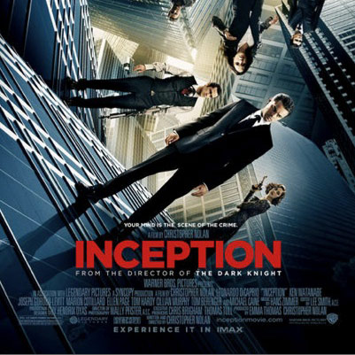
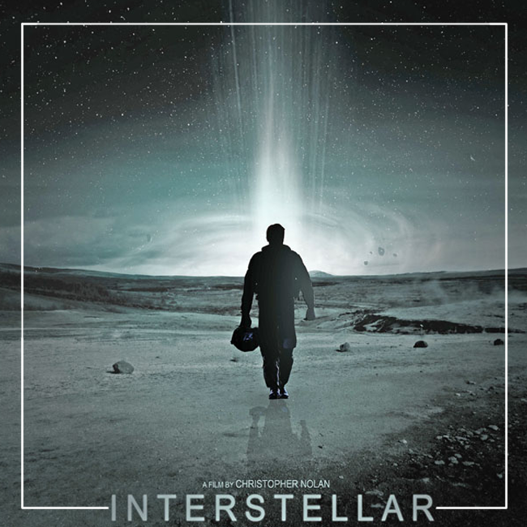

I am a UK student looking to gain coding skills to implement my ideas. I chose Le Wagon as it was the most highly rated coding bootcamp, with a diverse area for people to express themselves.
See for yourself|  |
Inception - 2010Dom Cobb is a skilled thief, the absolute best in the dangerous art of extraction, stealing valuable secrets from deep within the subconscious during the dream state, when the mind is at its most vulnerable. Cobb's rare ability has made him a coveted player in this treacherous new world of corporate espionage, but it has also made him an international fugitive and cost him everything he has ever loved. Now Cobb is being offered a chance at redemption. One last job could give him his life back but only if he can accomplish the impossible - inception. Instead of the perfect heist, Cobb and his team of specialists have to pull off the reverse: their task is not to steal an idea but to plant one. If they succeed, it could be the perfect crime. But no amount of careful planning or expertise can prepare the team for the dangerous enemy that seems to predict their every move. An enemy that only Cobb could have seen coming. |
|  |
Interstellar - 2014Earth's future has been riddled by disasters, famines, and droughts. There is only one way to ensure mankind's survival: Interstellar travel. A newly discovered wormhole in the far reaches of our solar system allows a team of astronauts to go where no man has gone before, a planet that may have the right environment to sustain human life. In the near future around the American Midwest, Cooper an ex-science engineer and pilot, is tied to his farming land with his daughter Murph and son Tom. As devastating sandstorms ravage earths crops, the people of Earth realize their life here is coming to an end as food begins to run out. Eventually stumbling upon a NASA base near Cooper's home, he is asked to go on a daring mission with a few other scientists into a wormhole because of Cooper's scientific intellect and ability to pilot aircraft unlike the other crew members. In order to find a new home while Earth decays, Cooper must decide to either stay, or risk never seeing his children again in order to save the human race by finding another habitable planet. |
Glengarry Glen Ross - 1992Glengarry Glen Ross follows a group of competitive Chicago real estate salesmen as they vie for leads in order to sell undesirable resort property to unwitting customers. As the men grow increasingly desperate to win the company contest for largest number of sales, they willingly employ various unethical and illegal practices in order to get ahead. It is only a matter of time, however, before their behavior catches up with them; a detective is called to the scene to investigate, and the truth starts to emerge. A dynamic look into the ruthless world of real estate, Glengarry Glen Ross is a sharp, fast-paced, and witty drama. |
This page has been coded during the FullStack program @LeWagon. That was probably the best experience of my entire life.